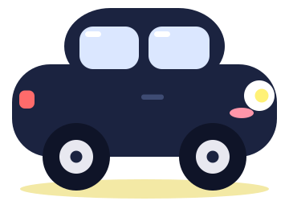
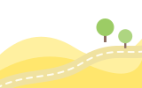

면허 딴 직후, 진짜 도로 감각을
익히는 연습 앱
로그인은 추후 지원할 예정이에요.
지금은 기록이 이 기기에만 저장돼요.

코스 설정과 확인은 반드시 정차한 상태에서 하세요. 주행 중에는 음성과 큰 안내만 참고하세요.
실제 도로 상황, 교통 신호, 표지판과 법규가 항상 우선입니다. 앱 안내에 따른 운전의 책임은 운전자에게 있어요.
운전면허시험장의 도로주행시험 코스를 준비하는 앱이 아닙니다.
경로를 만들 때 현재 위치가 경로 계산을 위해 지도·길찾기 서비스로 전송됩니다. 앱은 GPS 좌표를 저장하지 않고, 이 기기에는 완주 기록(날짜와 요약 문구)만 남아요.
안녕하세요!
오늘은 어떤 연습을 할까요?

추천 코스 LV.2 · 5km 코스도심 순환 코스
5.0km · 약 20분 · 무작위 방향
이 기간에 완주한 코스가 없어요.
게스트 · 이 기기에만 저장돼요
아직 완주한 코스가 없어요.
내 위치 확인 중...
검색 결과가 없어요.
내 위치 확인 중...
출발한 곳으로 다시 돌아오는 순환 코스만 추천해요.
-- m